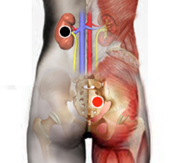

Olazo - obstrucción intestinal
Pares
riñón - sacro (contralat)
colon descendente - recto

Generalidades:
Obstrucción intestinal (Imposiblidad para obrar). Libera al tubo digestivo cuando por estrés, o por mala alimentación, infección, falla del sistema nervioso, etc no se puede defecar.
También se puede complementar el tratamiento con los pares auxiliares:
timo - suprarrenales
píloro - píloro
Iliaco - iliaco.
colon descendente - recto
cervicales - sacro
Causas:
Estrés, falta de fibra en los alimentos, obesidad, otros agentes patógenos.